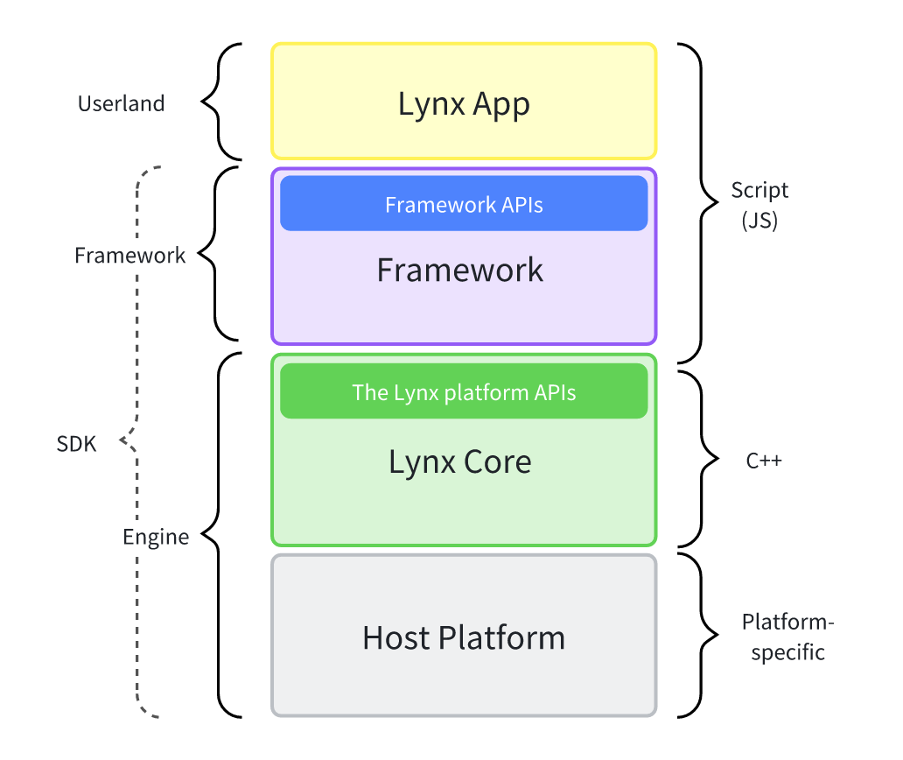
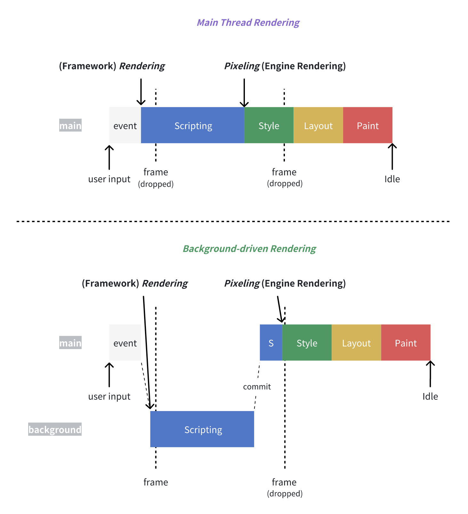

1. Introduction
1.1. Scope
The spec will be largely focusing on the Lynx architecture.
1.2. People
1.2.1. Scripting Developer
Individuals who program scripts within the scripting runtime enviroment.
1.2.2. Scripting Framework Developer
A kind of scripting developers that builds frameworks on top of the Lynx platform.
1.2.3. Lynx Developer
A kind of scripting developers that builds apps on top of the Lynx platform.
1.2.4. Native Developer
Individuals who program within the host platform.
1.2.5. Engine Developer
A kind of native developers that builds the engine.
1.2.6. Lynx Contributor
Individuals who contribute and commit to the Lynx project, including engine developers and scripting framework developers.
2. Common Infrastructure
2.1. High-level Concept
The following diagram gives a simplified overview of the pieces that form the Lynx tech stack. It clarifies where key terms (e.g. engine and framework) sit in this stack and highlights the API boundaries.

2.1.1. APP
It is where Lynx developers own and program with the Lynx platform APIs and framework to build UIs and implement business logic. An App may consist of one or multiple pages, with each page being loaded from an entrypoint bundle, and potentially additional lazy bundles as needed.
2.1.2. SDK
It is a collection of tools and libraries provided by Lynx contributors that enable Lynx developers to build apps for Lynx. It primarily encapsulates two layers: engine and framework.
2.1.3. Lynx Platform
Much like the Web platform (wikipedia), it refers to the collection of technologies and APIs that allows Lynx developers to create Lynx pages or applications that run on the Lynx engine.
2.1.4. Lynx Pipeline
The lynx pipeline in Lynx development refers to the sequence of steps a Lynx app takes to convert its internal structures into the visual representation that users see and interact with on their screens. In practice, the lynx pipeline is an iterative loop where user inputs can continuously trigger various phases of the process. This pipeline is divided into four main parts: load, parse, framework rendering and pixeling.
2.1.5. Host Platform
The Host Platform refers to the underlying operating system and its supporting services that provide the foundational runtime environment and platform specific capabilities for the engine.2.2. Structure
2.2.1. Lynx Bundle (or Bundle)
Where all necessary resources needed for a Lynx App to run are bundled together. This usually comprises of:
-
serialized element tree
2.2.2. Lazy Bundle
Where all necessary resources needed for a component to run are bundled together, has similar composition to bundle. It is usually lazy loaded at runtime.
2.2.3. Scripting Agent
Similar to the agent in ECMA-262 and W3C.2.2.4. LynxView
Similar to WebView in native developing. Renders bundle within host application’s context.2.2.5. Page
Similar to the document in W3C. It is the root element of Lynx App.2.2.6. The Lynx Object
It is a binding object, offering some common capabilities to script developers. It is provided in main thread runtime and background thread runtime.2.2.7. Lynx Group
When multiple LynxView is hosted on a shared scripting agent.
2.3. Running Scenary
2.3.1. Standalone
When Lynx is used independently, i.e. not mixed with another UI system , such as:
-
Single page
-
Full screen
2.3.2. Embedded
When Lynx is used as a part of, or is integrated within, another UI system, such as:
-
Multiple cards within a feed
3. Threading
3.1. Definition
3.1.1. Physical Thread
The actual thread provided by the OS (operating system).
3.1.2. Task
A unit of work to be processed. Effectively a function pointer with optionally associated state (i.e. A closure).
3.1.3. Virtual Thread
A Lynx-managed "thread of execution" that provides sequential execution of tasks. N.B. It may or may not have a one-one correspondence with physical thread.
3.1.4. Threading Model (or Threading Strategy)
Define how virtual threads correspond to physical threads.
3.2. Virtual Thread
3.2.1. UI Thread
The virtual thread corresponds to the physical thread regarded as the OS Main Thread.
3.2.2. Background Scripting Thread (historically known as "JS Thread")
The virtual thread where script is executed asynchronously.
3.2.3. Engine Thread (historically known as "Tasm Thread")
The virtual thread that drives pixel pipeline.
3.2.4. Layout Thread
The virtual thread where the layout step of pixel pipeline is performed.
Note: Implementors' Note: In the actual implementation of Lynx, Virtual Threads are implemented as Task Runners (or Looper) onto which Tasks can be posted.
3.3. Scripting-facing Threading Abstraction
3.3.1. Scriptable Thread
An abstract notion refers to any virtual threads that can be controlled or manipulated through scripting, abstracting away the threading strategy away from scripting developers.
3.3.2. Main Thread (or Lynx Main Thread)
The scriptable thread corresponds to any virtual threads that handles tasks that directly affect pixel pipeline. From a developer’s perspective, any scripts evaluated on this abstract thread can potentially block pixel pipeline.
Note: Explainers to Lynx developers In Lynx development, the “main thread” refers to the primary thread on which a Lynx page runs. The main thread is where Lynx processes user events and emit "paints". By default, the Lynx engine uses a single thread to run main thread scripts, as well as to perform layout, paints, etc.. This means that long-running main thread scripts can block the thread, leading to an unresponsive page and a bad user experience. --- forked from https://developer.mozilla.org/en-US/docs/Glossary/Main_thread
3.3.3. Background Thread (a.k.a. Off-Main-Thread)
The scriptable thread(s) corresponds to any virtual threads that handle tasks outside of pixel pipeline. Currently, only background scripting thread and workers spawned from there are considered background threads.
3.3.4. Dual-threaded Model
This refers to the programming model in Lynx development, which scripting developers can perceive and program with both the main thread and the background thread. This model allows scripting developers and framework to improve performance and maintain responsiveness by managing how and where scripts are executed.
4. Scripting
4.1. Script
4.1.1. Script
An abstract notion of code, represented often as files or other forms of binaries.
4.1.2. JavaScript Script
A kind of script that is compliant to ECMA-262.
4.2. Scripting Engine
4.2.1. Scripting Engine (a.k.a VM, or Virtual Machine)
An abstract machine in which script is executed.
4.2.2. JavaScript Engine
A kind of scripting engine that can execute JavaScript script.
4.2.3. Instances of Scripting Engine
4.2.3.1. V8, JavaScript Core, QuickJS, Hermes, etc.
These are some of the industry-acknowledged JavaScript engine.4.2.3.2. PrimJS VM
This is a scripting engine forked from QuickJS.4.3. JavaScript FFI
A foreign function interface (FFI) is a mechanism by which a program written in one programming language can call routines or make use of services written or compiled in another one. JavaScript FFI here refers to the mechanism by which JavaScript calls to Native.4.3.1. Node-API (or N-API)
Node-API (formerly N-API) is an API for building native Addons. It is independent from the underlying JavaScript runtime (for example, V8). Native developers can implement JavaScript FFI based on Node-API.4.3.2. JavaScript Interface (or JSI)
JavaScript Interface(JSI) is an interface that allows JavaScript to hold a reference to host platform object and vice-versa. Native developers can implement JavaScript FFI based on JSI.4.3.3. PrimJS API (or PAPI)
The PrimJS API is the API provided by PrimJS for native developers to implement JavaScript FFI. It offers a special HostRef that can be created and held at high performance. This HostRef is not an Object in JavaScript, and script developers cannot manipulate the HostRef directly; they can only pass it as a parameter to the FFI.4.4. Scripting Runtime Enviroment
4.4.1. Scripting Runtime Enviroment
An abstract enviroment comprises a scripting engine that executes scripts, along with a series of APIs and libraries accessible to the scripts.
4.4.2. Main Thread Scripting
4.4.2.1. Main Thread Runtime
The scripting runtime enviroment used by the main thread. It comprises of
-
PrimJS VM, and
-
APIs exposed from pixel pipeline, such as Element PAPI.
4.4.2.2. Main Thread Script (or MTS)
A kind of script intended to be executed on the main thread runtime, typically for performingelement manipulation to trigger pixeling.
4.4.2.3. Instances of main thread script
-
Scripts within the bundle intended to be initially loaded and executed on the main thread runtime as the entry point of an App. e.g. main-thread.js
-
Scripts within the bundle intended to be lazily evaluated on the main thread runtime on demand by the framework. The specific APIs for this are determined by the framework.
4.4.3. Background Thread Scripting
4.4.3.1. Background Thread Runtime
A scripting runtime enviroment comprises of
-
An instance of JavaScript engine, and
-
Extended scripting APIs such as those exposed by JSB (JavaScript Bridge, to be further defined).
4.4.3.2. Background Thread Script (or BTS)
A kind of script that is intended to be executed under the background thread runtime.
-
e.g. app-service.js, background.js, worker.js
4.5. Procedure Call (or Call)
In Lynx Engine, there are dual threads and dual scripting runtime enviroment. And there are FFI calls from Runtime to Native, as well as calls from Native to Runtime. These cross-environment or cross-thread calls are referred to as Procedure Call, or simply as Call.4.5.1. Sync Call
Sync call specifically refers to cross-environment calls that occur in the same thread, including calls from runtime to native and from native to runtime.4.5.2. Inter Thread Call (or ITC)
Inter Thread Call refers to calls between threads, including cross-thread calls between native and native, between runtime and native, between runtime and runtime.4.6. Native Module
Native Module is a host object implemented in the background thread runtime based on Node-API or JSI. Native developers can register host platform capabilities to Native Module, which allows script developers to call host platform capabilities in the background thread runtime.
4.7. Worker
Similar to the worker in W3C.5. Pipeline
5.1. Introduction
During the first-screen rendering, the lynx pipeline includes four parts: load, parse, framework rendering, and pixel pipeline. In the case of re-rendering, the lynx pipeline consists of two parts: framework rendering and pixel pipeline.5.1.1. Load
Load refers to the process of requesting the bundle during the first-screen rendering.5.1.2. Parse
Parsing bundle such that can be directly consumed in the subsequent pipeline process.5.1.3. Framework Rendering
As described in framework rendering.5.1.4. Pixel Pipeline
As described in pixel pipeline.6. Framework and Rendering
6.1. Framework and DSL
6.1.1. DSL (Domain-specific Language)
A DSL in the context of Lynx development is a scripting interface designed to provide a specialized syntax for describing UIs and interactions, allowing Lynx developers to define components and intuitively interact with pixel pipeline. Instances of DSL include ReactLynx.
6.1.2. Framework
The framework comprises DSL and builds upon it, encapsulating the above-mentioned Lynx platform APIs and constructs into idiomatic DSL-specific APIs, to provide a cohesive experience building production-ready Lynx apps. The implementation of framework is considered native-coupled, and is loaded on-demand from disk or memory, together with the userland app code.
6.2. Rendering
6.2.1. Rendering
The act of executing the lynx pipeline. When used alone, it typically refers to framework rendering because the pipeline almost always starts with it.
6.2.2. Framework Rendering
The process within the framework where the application scripts are evaluated to create and synchronize its internal representation of the UI, often represented as components, with the actual element tree in the engine through element manipulation.

6.2.3. Main Thread Rendering
The type of rendering where both framework rendering and pixeling occur on the main thread.
Note: Explainers to Lynx developers This approach allows synchronous UI updates, with the risks that long scripting tasks may block the main thread, causing the UI to be unresponsive.
6.2.4. Background-driven Rendering
The type of rendering where the framework rendering is initiated (and primarily executed) on a background thread, then transferred to the main thread to complete the pixeling.
Note: Explainers to Lynx developers This approach can improve the responsiveness of the main thread by utilizing parallelism and offloading heavy framework rendering tasks to background thread, but can introduce potential latency in UI updates.
6.2.5. First-screen Rendering (or FSR)
A special type of main thread rendering occurs during the load of Lynx apps to improve the first load experience.
6.2.6. Re-rendering
The type of rendering that occurs after first-screen rendering, can be either main thread rendering or background-driven rendering.
6.3. Instances of Framework
6.3.1. ReactLynx
A framework featuring React-like DSL adapted to Lynx’s dual-threaded model.
6.3.1.1. Rendering Patterns
-
Renders components in the main thread runtime to achieve first-screen rendering, and
-
Typically, re-rendering components via background-driven rendering.
-
By opting into main thread script features: allows for short-circuiting to main thread rendering via main thread event handling and EOM without re-rendering components.
7. Engine and Pixeling
7.1. Definition
7.1.1. Engine
It refers to the part of the SDK that is responsible for pixeling the Lynx apps into UIs that can be seen and interacted with by end users, and needs to be integrated natively and bundled together with the host application. Technically,
-
it is largely written in C++ and other host-platform-dependent native technologies (e.g. Objective-C for iOS, Java/Kotlin for Android, etc.), ensuring high performance and direct access to underlying system resources.
-
It also bundled a small amount of native-coupled script as core scripting runtime libraries that implement and constitute the Lynx platform APIs.
-
It’s also responsible for integrating with other native extensions (e.g. custom elements) developed by native developers.
Note: Implementors' Note: By being native-coupled, it means that a script has direct, unprotected access to native code through unstable scripting environment bindings (e.g. those defined in lynx.cc, lynx_app.cc), meaning changes to native code may break the interaction with those scripts. Therefore, they often need to be updated together to ensure runtime safety.
7.1.2. Engine FFI
Engine FFI refers to all the JavaScript FFI provided by Node-API, JSI, and PAPI in the engine.7.1.3. Pixeling
The act of executing the pixel pipeline. Try changes within the bundle’s structures, such as the modifications to the element tree, known as element manipulation.7.1.4. Pixel Pipeline
At a high-level, this is the main process of the engine. It’s where the Lynx engine processes element tree into pixels that are displayed on the users' screen.
7.2. Pixel Pipeline
The Pixel Pipeline consists of the following stages.7.2.1. Resolve
At this stage, based on the attribute of the element, the computed style and prop bundle of the element are generated and synchronized to the layout node. This stage will also create and modify layout node tree. At the same time, it will also generate UI paint op.7.2.1.1. Parallel Resolve
Parallel resolve is a resolve process such that the pixel pipeline will spilt resolve tasks into independent sub-tasks and executing the tasks in parallel on multiple threads.7.2.1.2. Serial Resolve
In contrast, Serial resolve is a resolve process where all resolve tasks are executed on a single thread.7.2.2. Layout
This stage is based on layout node tree to complete the layout process, and finally synchronize the layout results to element. Element adjusts the layout results and generate UI layout op.7.2.3. Execute UI OP
7.2.3.1. Execute UI Paint OP
Execute the UI Paint OP generated during the pre-order stages.7.2.3.2. Execute UI Layout OP
Execute the UI Layout OP generated during the pre-order stages.7.2.4. Paint
Based on platform UI and platform UI Tree, complete the final pixeling.8. Element, Layout Node and Platform UI
8.1. Definition
8.1.1. Element Tag
An element tag is an abstraction notion, which is a static markup structure in DSL, composed of tags wrapped in angle brackets (such as8.1.2. Element
Element is implemented natively on the host platform. It is a native object created during the Framework Rendering phase, consisting of nodes (Node) that form a tree structure and provide an interface for script access to and manipulation of page content.8.1.3. Component
An abstraction notion describing reusable, encapsulated pieces of UI that can be defined upon elements. Components are almost always implemented in DSL-specific scripting.8.1.4. Layout Node
Layout Node is a node which holds the layout related computed style. It converts the layout related computed style into data that layou engine can consume.8.1.5. Platform UI
The Platform UI is the platform-level node used to carry the paint and layout result. In the subsequent paint phase, platform UI will use this result to complete the pixeling.8.2. Element
8.2.1. Built-in Element
Elements available to scripting developers without any extra configurations, such as <page/>, <view/>, <image/>.
8.2.2. Custom Element
Elements available to scripting developers usually after manual installation.
8.2.3. Element Tree
Element tree is a multi-branch tree composed of elements.8.2.4. Element Attribute (or Attribute)
Attribute refers to all properties asigned to element.8.2.4.1. Selector
Selectors, similar to web css selectors, currently include tag selector, id selector, and class selector.8.2.4.2. ID Selector
An id selector matches an element based on the content of that element’s id property. For an element to be selected, its id property must exactly match the value given in the selector.8.2.4.3. Tag Selector
Tag selector matches an element based on the content of that element’s name. For an element to be selected, its name must exactly match the value given in the selector.8.2.4.4. Class Selector
Class selector matches elements based on the contents of their class property.8.2.4.5. Inline Style
Inline style is used to get as well as set the style property of an element with Element PAPI.8.2.4.6. Dataset
The dataset property of the element provides read/write access to custom data property (data-*) on elements with Element PAPI.8.2.4.7. Event Listener
The event listener property of the element provides add/remove access to event listener property (bind/catch*) on elements with Element PAPI.8.2.5. Element Tree Operation
Element Tree Operation refers to various operations on an element tree.8.2.5.1. Element Tree Mutation
Element Tree Mutation refers to element tree operations that insert, delete, or replace elements within the element tree.8.2.5.2. Selector Query
Selector Query is a type of element tree operation, which will perform a method steps which are to return the first result or all results of running scope-match a specific selector or attribute against the target element.8.2.6. Element Operation
Element Tree Operation refers to various operations on an element.8.2.6.1. Element Mutation
Element Tree Mutation refers to element tree operations that set, get element’s attribute within the element.8.2.6.2. Element Method
Element Method refers to the methods provided by theelement that can be used to retrieve information about the element or manipulate the element, such as boundingClientRect, animate, and other methods.8.2.7. Element Related API
8.2.7.1. Element PAPI
The MTS environment exposes APIs based on PAPI to scripting framework developers. Using these APIs, the developers can perform element tree operations and element operations.8.2.7.2. Element Object Model (or EOM)
EOM is the Object Model encapsulated based on Element PAPI exposed to script developers in the MTS environment. Based on EOM, developers can perform element tree operations and element operations.8.2.7.3. Element Inter Thread Call (or Element ITC)
Element ITC is the inter thread call exposed to script developers in the BTS environment. Based on this, developers can perform element tree operations and element operations across threads.8.2.7.4. Element Selector Query API
Element Selector Query API is an implementation of Element ITC, allowing script developers to use it to generate an element handle in the background thread for inter thread call of element methods.8.2.8. Computed Style
Computed style is the final style that pixel pipeline aggregates from all the selector and inline style of an element according to the style sheet.8.2.8.1. Paint Related Computed Style
Paint Related Computed Style refers to styles related to paint, such as background, color, and etc.8.2.8.2. Layout Related Computed Style
Layout Related Computed Style refers to styles related to layout, such as width, height, and etc.8.2.9. Prop Bundle
Prop Bundle consists of the element’s attribute and paint related computed style.8.3. Layout Node
8.3.1. Layout Node Tree
Layout Node Tree is a multi-branch tree composed of layout nodes.8.3.2. Platform Layout Node
Platform Layout Node is created and held by layout node. Some specific element nodes, such as text, inline-text, inline-view, and etc require platform capabilities for measurement. For these types of element nodes, a platform layout node will be created.Note: Explainers to Lynx developers in Lynx development, the layout engine of Lynx is named as starlight, which is an independent layout engine that supports various layout algorithms, including flex, linear, grid and etc. It also exposes capabilities for custom measure and custom layout, providing users with the flexibility to extend its functionality.
8.4. Platform UI
8.4.1. Platform UI Primitives
Platform UI Primitives refer to the host platform objects that are actually used for pixeling. On Android, the primitives are the native Android Views, and on iOS, they are the UIView objects provided by iOS UIKit.8.4.2. Platform UI Tree
UI Tree is a multi-branch tree composed of platform UIs.8.4.3. Platform UI Operations (or UI OP)
Platform UI Operations refers to the operations on the platform UI and platform UI Tree generated during pixel pipeline. It consists of platform UI paint operations and platform UI layout operations.8.4.3.1. Platform UI Paint Operations (or UI Paint OP)
UI Paint OP is composed of platform UI mutation operations and platform UI tree mutation operations.8.4.3.2. Platform UI Layout Operations (or UI Layout OP)
UI Layout OP currently only includes the operations to update measure and layout info to platform UI.9. Styling
The specifications related to Lynx Styling are similar to those of W3C, including but not limited to Style Sheet, Style Rule, CSS Style Rule, and Style Property.
10. User Interaction
10.1. Event
An event is an abstraction notion describing the signal that triggers an action in the system. This action may be triggered by the scripting developer, the native developer or the users' interaction.
10.1.1. Event Object
An Event object is an object that contains state information related to an event. It is implemented natively on the host platform.
10.1.2. Main Thread Event Object
Main Thread Event is a script object initialized by the main thread runtime based on the event object, and it is not a host object.10.1.3. Background Thread Event Object
Background Thread Event is an object passed to background thread runtime by the engine based on the event object with inter thread call, and it is also not a binding object.10.2. Event Listening
elements listen for events by setting the event handler.
10.2.1. Event Handler
Event Handler is the value of the element’s event listener, which serves as a handle for the MTS closure or BTS closure. When an event is triggered, the corresponding procedure call will be invoked based on the event handler.10.2.1.1. Main Thread Event Handler
When the closure handled by the event handler is an MTS closure, it is referred to as the Main Thread Event Handler.10.2.1.2. Background Thread Event Handler
When the closure handled by the event handler is an BTS closure, it is referred to as the Background Thread Event Handler.10.2.2. Event Handler Function
Event handler function is a BTS or MTS closure that accepts an event object.10.2.2.1. Main Thread Event Handler Function
Event handler function is a MTS closure that accepts an main thread event object.10.2.2.2. Background Thread Event Handler Function
Event handler function is a BTS closure that accepts an background thread event object.10.3. Event Propagation
When an event is triggered, it will propagate on the event respond chain, triggering the corresponding event handler function according to the event handler.
10.3.1. Event Respond Chain
The event response chain consists of a series of elements that can respond to events. It generally contains elements on the path from the root element to the element where the action actually occurs.
10.3.2. Event Capture
In the event capture stage, the event will start from the root element and propagate down along the event respond chain until the element where the action is actually triggered.
10.3.3. Event Bubble
In the event bubbling phase, the event will propagate upward along the event respond chain from the element where the action is actually triggered, until the root element.
10.3.4. Event Interception
During the process of event propagation, the event can be intercepted midway to prevent the event from continuing to propagate.